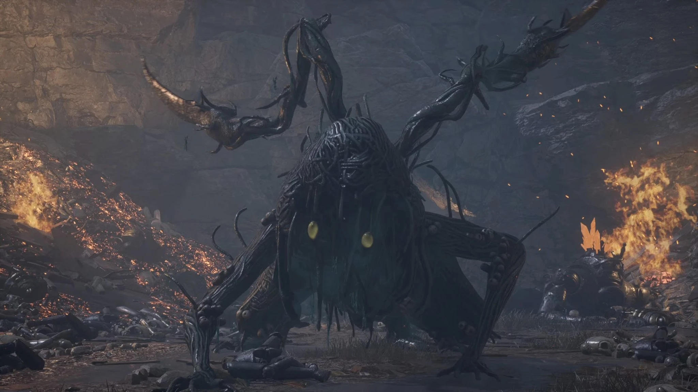
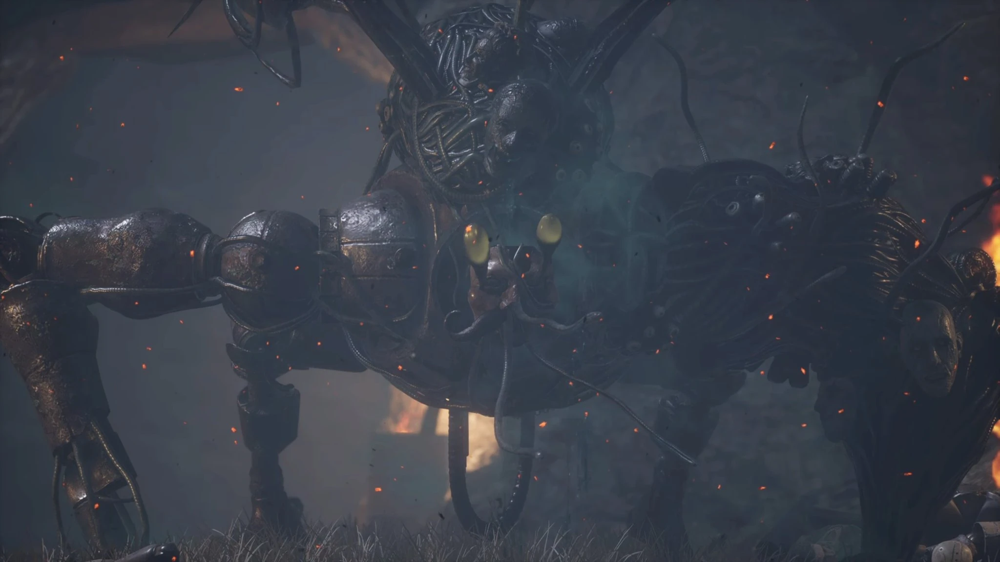

Puppet-Devouring Green Monster
A terrifying Carcass anomaly born in the toxic dumps of the Barren Swamp. It feeds on discarded puppet frames to grow stronger. Driven to a frenzy, it eventually assimilates an entire scrapped police puppet (heavily resembling the Scrapped Watchman), fusing flesh and machine into a deadly hybrid.
Combat Tips
In Phase 1, the monster relies on acidic spews, erratic tentacle whips, and a dangerous burrowing attack. When it dives underground, keep sprinting sideways to avoid it popping out beneath you. In Phase 2, it assumes the mechanical body of a Watchman. It regains the delayed heavy slams and grabs of the early-game boss, but mixed with decaying tentacle thrusts. Fire damage is your best friend here, as it melts its Carcass health bar.
Combat Stats
- Type: Carcass
- Weakness: Fire
- Resistance: Acid / Decay
- Location: Barren Swamp Nest
- Summon: Specter heavily recommended to split aggro
- Drop: Puppet-Devouring Green Hunter's Ergo, Golden Ergo